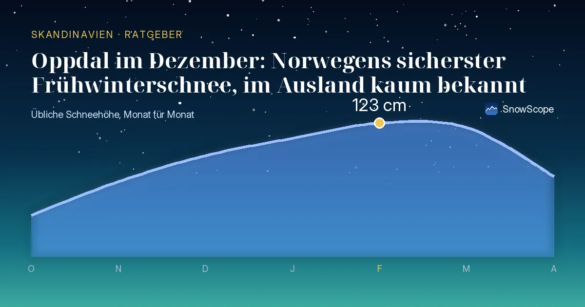

Oppdal im Dezember: Norwegens sicherster Frühwinterschnee, im Ausland kaum bekannt
Oppdal liegt in einem trockenen Tal, in dem Schnee liegen bleibt. Am 15. Dezember bringt ein typisches Jahr 60 cm in der Talstation (585 m), und 93 Prozent der vergangenen Winter behielten dort in der Woche vor Weihnachten mindestens 30 cm. Wenige ausländische Skifahrer kennen dieses Binnengebiet-Skigebiet, doch es hat Norwegens zuverlässigsten Frühjahresschnee unten.
Die Live-Schneeprognose für Oppdal in der SnowScope-AppSchneehöhen, Pulverschnee-Alarme und 3D-Karte, gratis.
Warum die Talstation weiß bleibt, wenn andere es nicht tun
Zwischen Dovrefjell und Trondheim liegt Oppdal in einem kalten, trockenen Tal, das Schnee besser hält als tiefere Skigebiete in der Nähe. Die 41 km Pisten und 15 Lifte erstrecken sich von 585 m bis 1327 m, aber was den Dezember hier besonders macht, ist dass Anfänger- und Familienhänge unten fast genauso verschneit sind wie oben.
Am 15. Dezember liegen die Tiefen bei 60 cm in der Talstation, 64 cm in der Mittlestation (956 m) und 72 cm oben (1327 m). Diese Nähe über die Höhen hinweg ist in Norwegen selten.


Die Zahlen, die im Dezember zählen
In der Woche 15.-21. Dezember hatten 93 Prozent der vergangenen Winter mindestens 30 cm in der Talstation. In der Mittlestation steigt es auf 96 Prozent, oben auf 98 Prozent. Die Weihnachtswoche (22.-28. Dezember) ist noch sicherer: 96 Prozent in der Talstation, 98 Prozent in der Mitte und oben.
Auch ein mageres Jahr (1 von 10 Wintern) hält am 15. Dezember 30 cm in der Talstation und 40 cm in der Mittlestation. Dünner Schnee ist hier Mitte Winter selten.
Kürzere Tage, kältere Luft
Dezember so weit im Norden bedeutet weniger Tageslicht. Die Sonne geht spät auf und früh unter, also plane zum ersten Licht zu fahren und rechne mit einem kürzeren Tag auf den Pisten. Kälte ist konstant in einem trockenen Tal, also packe Schichten und warme Handschuhe.
Der Vorteil: Diese trockene Kälte hält den Schnee leicht und stabil, gut für die meisten Fähigkeiten und Pistentypen.
Der langfristige Trend
Über 46 Winter hat sich der Dezemberschnee in Oppdal verschoben. Die Talstation lag im ersten Zeitraum bei durchschnittlich 71 cm, fiel aber in den letzten 15 Wintern auf 46 cm. Der letzte Winter (2025-26) hatte am 15. Dezember 38 cm an allen drei Höhen: immer noch genug zum Fahren, aber unter dem älteren Durchschnitt.
Diese Verlangsamung spiegelt ein breiteres Muster in der Region wider, also buche früh und wähle Termine vor der Hauptweihnachtswoche, wenn du die sichersten Bedingungen willst.
Oppdal gegen Trysil: Wo du auf Frühjahresschnee wetten solltest
Trysil ist größer und berühmter: 101 km Pisten und 40 Lifte. Aber im Dezember ist seine Talstation (407 m) schwächer. Am typischen 15. Dezember hat Trysils Talstation 26 cm und nur 52 Prozent der Winter behielten in der Woche 15.-21. Dezember 30 cm. Seine Mittlestation (44 cm, 83 Prozent) und Bergstation (60 cm, 89 Prozent) sind solide, aber immer noch unter Oppdal.
Wenn deine Gruppe Anfänger einschließt oder du im Dezember mit hoher Sicherheit tiefe Hänge fahren willst, ist Oppdal die sicherere Wahl.
Wie du buchst und hinkommst
Oppdal liegt an der Eisenbahn Oslo-Trondheim und an der Hauptstraße, du kannst es also ohne lange Bergfahrt in schlechtem Wetter erreichen. Skipässe nutzen dynamische Preisgestaltung nach Datum im Online-Shop des Betreibers; am 13. November 2026 war auf der offiziellen Seite kein fester Preis sichtbar.
Die Regel ist einfach: Buche online früh, und wähle Termine außerhalb der Weihnachtsferien, um weniger zu zahlen und Menschenmassen zu vermeiden.
Tipps für Skifahrer
- Familien mit jungen Skifahrern: Wähle Termine in frühem oder spätem Dezember und nutze die Tallifte; Oppdals tiefe Hänge bleiben in 93 Prozent der Winter Mitte Monat verschneit.
- Buche deinen Pass online weit im Voraus und für eine Woche vor der Weihnachtswoche, um Kosten zu senken und ruhigere Hänge zu finden.
- Starte deinen Tag beim ersten Lift; Dunkelheit kommt schnell so weit im Norden im Dezember.
- Bring schwere Handschuhe und Schichten; trockene Täler sind oft der kälteste Teil des Gebirges.
- Bevor du im Dovrefjell-Gebiet außerhalb der Pisten fährst, prüfe den offiziellen norwegischen Lawinenbericht auf varsom.no.
Zu diesen Zahlen
Die Schneehöhen der Skigebiete sind der meiste Schnee in den oberen Hängen am angegebenen Tag; es sind Schätzungen für eine Fläche, keine Messung an einem Punkt. Prognosen können sich ändern. Lies vor dem Freeriden immer den offiziellen Lawinenlagebericht.
Offizielle Lawinenlageberichte: Varsom (NVE)
Diesen Bericht zitieren
Für Forschung, Lehre oder Presse: Zahlen und Grafiken sind unter CC BY 4.0 mit dieser Quellenangabe frei nutzbar.
SnowScope (2026), Oppdal im Dezember: Norwegens sicherster Frühwinterschnee, im Ausland kaum bekannt, https://snowscope.app/blog/de/2026/11/oppdal-december-skiing-snow-reliable-norway.html, abgerufen am 2026-11-14
SnowScope (Atlas Labs). (2026, November 14). Oppdal im Dezember: Norwegens sicherster Frühwinterschnee, im Ausland kaum bekannt. SnowScope snow reports. https://snowscope.app/blog/de/2026/11/oppdal-december-skiing-snow-reliable-norway.html
BibTeX
@misc{snowscope2026oppdaldecemberskiingsnow,
author = {{SnowScope (Atlas Labs)}},
title = {Oppdal im Dezember: Norwegens sicherster Frühwinterschnee, im Ausland kaum bekannt},
year = {2026},
month = nov,
howpublished = {\url{https://snowscope.app/blog/de/2026/11/oppdal-december-skiing-snow-reliable-norway.html}},
note = {Published 2026-11-14 13:44 UTC; accessed 2026-11-14}
}· CC BY 4.0 · Methoden, Daten und Werkzeuge →
Oppdal: Schnee und Temperatur nach Höhe, dieser Winter vs letzter (Werkzeuge) →
Oppdal folgen
Gratis: eine Nachricht, wenn Neuschnee kommt, und jeden Morgen die Vorhersage.